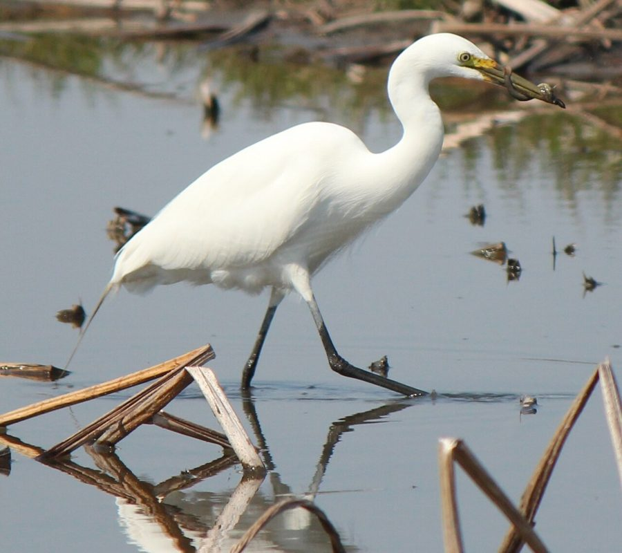

मझोला बगुलाIntermediate Egret
Egretta intermedia · Ardeidae · BRD-0173

- Scientific name वैज्ञानिक नाम
- Egretta intermedia (Wagler, 1829)
- Family कुल
- Ardeidae
- Hindi हिंदी
- मझोला बगुला
- Local names स्थानीय नाम
- majhola bagula, jhola bagula, intermediate egret, bagula
- Status here यहाँ की स्थिति
- native
- Movement आवागमन
- Resident, here all year
- Known from कहाँ दर्ज
- Others have published records from the Basti–Ayodhya districts बस्ती–अयोध्या के ज़िलों से दूसरों के प्रकाशित अभिलेख
- IUCN IUCN
- LC
- Review समीक्षा
- audited and independently read
When to look कब देखें
Present all year. साल भर मौजूद।
Uses and possibilities उपयोग और संभावनाएँ
Drawn from the documented uses in the profile below, where each is labelled traditional, current or a research lead. All uses →
Tell it apart from इनसे अलग पहचानें
मझोला बगुला / Intermediate Egret
Egretta intermedia (Wagler, 1829) — Ardeidae
मझोला बगुला — एक सफ़ेद, पतली गर्दन वाली चिड़िया जो नदियों, तालाबों, और धान के खेतों में खड़ी रहती है। नाम से ही साफ़ है — यह न तो बहुत बड़ा है और न ही बहुत छोटा। इसकी चोंच पीली होती है। गर्मी के बाद बारिश में जब खेतों में पानी भर जाता है, तब यह बगुला खूब दिखाई देता है। यह पानी में खड़ा होकर या धीरे-धीरे चलते हुए मछलियों को ढूँढता है। अपनी तेज़ चोंच से तेज़ी से चोट मारकर मछली को पकड़ता है।
Quick Identification त्वरित पहचान
| Feature | Description |
|---|---|
| Size | Medium-sized heron; 50–70 cm long; wingspan 85–110 cm |
| Plumage | Entirely white; bright white in breeding plumage |
| Bill | Yellow or olive-yellow; long, pointed, dagger-like |
| Legs | Black or dark olive; long |
| Neck | Slender and S-shaped in flight; usually held straight when standing |
| Head | Small, narrow; loral area (between eye and bill) often greenish in breeding |
| Eyes | Yellow or yellowish |
| Feet | Yellow; partially visible beyond tail in flight |
| Size comparison | Smaller than Great Egret; larger than Little Egret |
| Breeding plumage | Develops decorative plumes on back during breeding season |
| Non-breeding | Plain white; fewer decorative plumes |
Field tip: In wetlands, look for a medium-sized white heron with a yellow bill. Intermediate between the large Great Egret (and its black feet) and the smaller Little Egret (with its black bill). Often seen feeding alone or in small loose groups in shallow water. The yellow bill and smaller size distinguish it from the Great Egret.
हिंदी — कैसे पहचानें: सफ़ेद बगुला, मझली साइज़। पीली चोंच और काली टाँगें। तालाब और खेतों के पानी में खड़ा रहता है। न तो बहुत बड़ा, न ही छोटा।
Morphology आकारिकी
Biometrics:
| Measurement | Range |
|---|---|
| Total length | 500–700 mm (50–70 cm) |
| Wingspan | 850–1100 mm (85–110 cm) |
| Wing (folded) | 250–290 mm |
| Tail | 170–200 mm |
| Bill | 65–85 mm |
| Tarsus | 100–120 mm |
| Neck length | 300–350 mm (extended) |
Plumage: Entirely white or nearly white. In breeding plumage, the bird is bright white; the white is particularly bright on the head and neck. Non-breeding birds are slightly duller white.
Breeding plumage (during breeding season): Develops decorative plumes on the back, creating a "shaggy" or plume-covered appearance. Loral region (between eye and bill) becomes greenish or olive-yellow. Some individuals develop dark leg coloration changes during breeding.
Non-breeding plumage: Plain white without elaborate plumes; less decorative appearance; loral region remains yellow.
Bill: Yellow or olive-yellow; long, straight, pointed, and dagger-like. Adapted for spearing fish and small aquatic prey.
Legs and feet: Black or dark olive; long and thin; adapted for wading in water. Yellow coloration may appear on the feet and loral region during breeding season.
Neck: Long and slender; in flight, retracted (doubled back on itself, not extended like a crane). When standing, the neck forms an S-shape, typical of herons.
Eyes: Yellow or pale yellow.
Sexes: No obvious sexual dimorphism; males and females similar in appearance.
Juveniles: Similar to adults but duller; less bright white; bill may be duller yellow.
Vocalisations: Generally silent outside breeding season. During breeding, may give harsh croaking calls and bill-clattering displays.
हिंदी: पूरा सफ़ेद। पीली चोंच बहुत तेज़। काली पतली टाँगें। गर्दन लंबी और पतली।
Behaviour & Ecology व्यवहार और पारिस्थितिकी
The Intermediate Egret is a wading bird that hunts by stalking in shallow water. It is solitary or in small loose groups, unlike some herons that form large roosting colonies.
Foraging behaviour: Feeds by wading through shallow water (typically 15–40 cm deep) or standing motionless and waiting for prey to approach. Uses the characteristic strike of herons: a rapid thrust of the head and neck to spear or grasp prey. Preys primarily on small fish but also takes frogs, crustaceans, and other small aquatic animals.
Habitat preference: Occupies wetlands including rivers, ponds, tanks, marshes, and rice paddies. Prefers shallow water where it can wade. Less dependent on large water bodies than Great Egrets; adapts to small ponds and rice fields.
Feeding grounds: Often in flooded rice paddies during the monsoon and post-monsoon seasons. Also in rivers, lakes, and permanent wetlands year-round.
Social behaviour: Usually solitary or in pairs while feeding. May form small roosts at night or during non-breeding seasons. Less colonial than Great Egret.
Roosting: Roosts in trees near water, typically in small numbers or alone.
Daily activity: Primarily diurnal (daytime) forager, though may feed at dawn and dusk. Rests during mid-day heat.
Seasonality: Year-round resident in most of India; some local movements in response to water availability and prey abundance may occur.
Breeding: Breeds in small colonies, often in association with other egrets and herons.
हिंदी: अकेला रहता है या छोटे झुंड में। तालाब और खेतों के पानी में शिकार करता है। मछलियों को तीव्र गति से चोंच मारकर पकड़ता है।
Life Cycle / Phenology जीवन चक्र
| Stage / season | Notes |
|---|---|
| Breeding season | March–September; peak May–July |
| Nest | Stick nest in tree near water; colonial nester |
| Clutch size | 3–5 eggs; typically 4 |
| Incubation period | 25–26 days |
| Fledging period | 35–40 days |
| Brood | Usually one brood per season |
| Chick development | Chicks fledge July–August |
| Non-breeding season | October–February; birds may disperse or remain in territory |
| Moult | Gradual throughout the year; post-breeding moult July–October |
| Longevity | Unknown in wild; likely 10–15 years in captivity |
Seasonal pattern in eastern UP:
- January–February: Non-breeding; feeding in rivers and permanent wetlands
- March–April: Breeding season begins; pairs establish territories
- May–July: Peak breeding; eggs and chicks in nests; decorative plumes prominent
- August–September: Chicks fledging; post-breeding moult begins
- October–December: Non-breeding; dispersal and feeding in expanding wetlands (if monsoon rains are adequate)
- Year-round presence: Resident throughout the region where permanent wetlands exist
हिंदी: मार्च से सितंबर तक अंडे देते हैं। पेड़ों में घोंसला बनाते हैं। साल भर रह सकते हैं।
Host Plants or Prey आहार
Predatory diet:
- Small fish (primary prey): cyprinids, gobies, silversides, and other small fish species
- Amphibians: frogs and tadpoles
- Crustaceans: small shrimp and freshwater crabs
- Aquatic insects: dragonfly nymphs, water beetles, and other aquatic insects
- Occasionally: small reptiles, small birds
Feed size varies with water depth and prey availability. Typically feeds on prey 2–10 cm long.
हिंदी: मुख्य रूप से छोटी मछलियाँ खाता है। मेंढक और कीड़े भी खाता है।
Predators / Natural Enemies शत्रु
- Raptors: Large eagles and large hawks may prey on eggs, chicks, or occasionally fledglings
- Snakes: Particularly water snakes and other ophidians that raid nests
- Corvids and other birds: Crows and other large birds may harass or prey on eggs and chicks
- Humans: Historically hunted for feathers (egret plumes) for the millinery trade
The size and vigilance of egrets provide protection from many predators when adult.
हिंदी: बड़े बाज़, सँप, और कौवे घोंसले को तोड़ते हैं।
Agricultural / Human Relevance कृषि प्रासंगिकता
Potential conflict with rice cultivation: In rice paddies, the egrets feed on young fish and other aquatic fauna. Some of this fauna (frogs, aquatic insects) is considered beneficial by traditional rice farmers. However, egrets also eat pests (mosquito larvae and other insects), so their net impact on rice cultivation is complex.
Beneficial for mosquito control: Feeds on mosquito larvae and aquatic insects that carry disease vectors; may provide some disease control benefit.
Protected under law: Like all wild birds in India, protected under the Wildlife (Protection) Act 1972, Schedule IV. Hunting or trapping is prohibited. Historically, egrets were hunted for their plumes, but hunting is now illegal.
Cultural significance: Herons and egrets feature in Indian folk traditions, art, and mythology. The elegant white egret is a symbol of grace in various traditions.
हिंदी: यह विधि अधिनियम 1972 की अंतर्गत संरक्षित है। मच्छरों के लार्वे को खाता है, इसलिए स्वास्थ्य के लिए फ़ायदेमंद है।
Expected Locally स्थानीय रूप से अपेक्षित
Not a field record. Written from published accounts for eastern Uttar Pradesh. No confirmed local sighting yet — if you have seen it, that is what the atlas needs.
अभी तक स्थानीय पुष्टि नहीं। यह विवरण प्रकाशित स्रोतों से है, किसी अवलोकन से नहीं।
Not a field record. This species' presence is based on its known distribution in India. GBIF holds published records from the wider Awadh–Purvanchal plain and from Basti–Ayodhya districts.
ये दूसरों के प्रकाशित अभिलेख हैं, परियोजना के नहीं। यह पहले से दर्ज है।
Expected year-round in wetlands, rivers, rice paddies, and marshes throughout Basti district and eastern Uttar Pradesh, particularly during the monsoon and post-monsoon seasons (July–December) when flooded rice paddies provide abundant feeding habitat. Presence in dry season depends on the availability of permanent water bodies (rivers, tanks, ponds).
A dated photograph of the bird in a wetland habitat, showing the characteristic white plumage and yellow bill, would confirm a local record.
Distribution वितरण
Global range: Tropical and subtropical Asia from the Indian subcontinent through Southeast Asia to Japan. Widely distributed across Old World tropics.
In India: Widespread throughout the country in suitable wetland habitats from sea level to about 1500 m elevation.
In Uttar Pradesh: Recorded in rivers, ponds, and rice fields throughout the state; particularly abundant in eastern districts during the monsoon and post-monsoon seasons.
In Basti district / eastern UP: Common in the Ghaghra and Rapti river systems and in flooded rice paddies; year-round presence in suitable habitat; populations increase significantly during monsoon flooding.
Research Questions शोध प्रश्न
- मझोला बगुले का मुख्य भोजन क्या है — मछली, मेंढक, या कीड़े? क्या यह मौसम के साथ बदलता है?
- How does feeding habitat use vary seasonally — does the egret shift from rivers to rice paddies during monsoon?
- क्या मझोला बगुला के झुंड का साइज़ साल के समय के अनुसार बदलता है?
- What is the breeding success rate (chicks per breeding pair) and how does it vary with water level and prey availability?
- How far do young egrets disperse from their natal colony, and do they return to breed?
- क्या इस बगुले की संख्या धान की खेती के तरीकों में बदलाव से प्रभावित होती है?
Similar Species मिलती-जुलती प्रजातियाँ
| Species | Key Difference | Hindi | |
|---|---|---|---|
| [[great_egret\ | Great Egret]] (Ardea alba) | Much larger (90–100 cm); darker legs (usually black); longer bill; more angular head | बड़ा बगुला, काली पतली टाँगें |
| [[little_egret\ | Little Egret]] (Egretta garzetta) | Smaller (55–65 cm); black bill; yellow feet in breeding plumage; finer bill | छोटा बगुला, काली चोंच |
| [[cattle_egret\ | Cattle Egret]] (Bubulcus ibis) | Smaller (45–50 cm); stouter yellow bill; often terrestrial (not aquatic); buff plumage in breeding season | गाय का बगुला, छोटा |
Field rule: A medium-sized white egret with a yellow bill and black legs, wading in shallow water in rivers and rice paddies — this is the Intermediate Egret. The Great Egret is larger and darker-legged. The Little Egret is smaller with a black bill. The Cattle Egret is smaller and more terrestrial.
Taxonomy & Classification वर्गीकरण
Original description. The species was described by Johann Georg Wagler in 1829 in Skizzirte Entw. und Naturg. der Vögel as Ardea intermedia. The genus Egretta was assigned later. Type locality is unknown but likely from Asia.
Subspecies. Multiple subspecies have been described, with E. i. intermedia occurring in Asia (including the Indian subcontinent). Subspecific boundaries are not well-defined.
Family and order placement. Order Pelecaniformes (pelicans, herons, egrets, and cormorants); family Ardeidae (herons and egrets). The genus Egretta comprises the smaller egrets and is distributed throughout the Old World tropics and subtropics.
Phylogenetic notes. Egretta intermedia is closely related to other Asian egrets and is sometimes considered conspecific with or closely related to the Little Egret (E. garzetta).
IUCN status rationale. The species is assessed as Least Concern (LC) due to its wide range, relatively large population, and adaptability to human-modified wetlands. Populations appear stable or increasing in many regions.
हिंदी: भारत और एशिया में पाया जाता है। दुनिया के और हिस्सों में भी इसी तरह की बगुलाएँ हैं।
Photo Gallery फोटो गैलरी
No photos yet — add field photos to media/species/intermediate_egret/ and run node scripts/sync_photos.js.
Wanted photos:
- Individual wading in shallow water
- In flight showing body proportions
- Breeding plumage with decorative plumes
- At roosting site or nest colony
- Feeding sequence (striking at prey)
References संदर्भ
- Wagler, J. G. (1829). Isis von Oken 22: 659, as Ardea intermedia. [original description]
- Ali, S. & Ripley, S.D. (1968). Handbook of the Birds of India and Pakistan. Vol. 1 (Divers to Hawks). Oxford University Press, Delhi. Pp. 56–57.
- Grimmett, R., Inskipp, C. & Inskipp, T. (2011). Birds of the Indian Subcontinent: The Ripley Guide. 2nd edn. Helm Identification Guides, Oxford. Vol. 1, pp. 73–74.
- GBIF Occurrence Data — Egretta intermedia, Asia (2024).
- Rasmussen, P. C. & Anderton, J. C. (2012). Birds of South Asia: The Ripley Guide. 2nd ed. Smithsonian Institution and Lynx Edicions.
- BirdLife International. Egretta intermedia. IUCN Red List of Threatened Species. https://www.iucnredlist.org/
Source file: species/fauna/birds/intermediate_egret.md